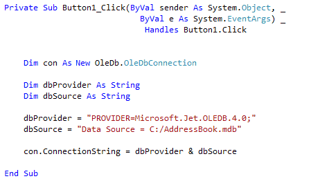
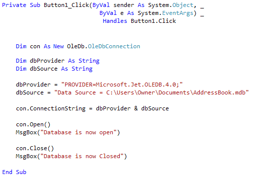
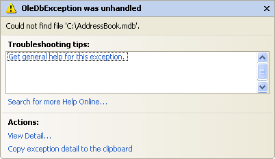

Write your own Database code in VB .NET
In this next section, we'll take a look at the objects that you can use to open and read data from a Database. We'll stick with our Access database, the AddressBook.mdb one, and recreate what the Wizard has done. That way, you'll see for yourself just what is going on behind the scenes.
So close any open projects, and create a new one. Give it whatever name you like, and let's begin.
If you haven't yet downloaded the Address Book database, you can get it here:
Download the Address Book Database
The Connection Object
The Connection Object is what you need if you want to connect to a database. There are a number of different connection objects, and the one you use depends largely on the type of database you're connecting to. Because we're connecting to an Access database, we'll need something called the OLE DB connection object.
OLE stands for Object Linking and Embedding, and its basically a lot of objects (COM objects) bundled together that allow you to connect to data sources in general, and not just databases. You can use it, for example, to connect to text files, SQL Server, email, and a whole lot more.
There are a number of different OLE DB objects (called data providers), but the one we'll use is called "Jet". Others are SQL Server and Oracle.
So place a button on your form. Change the Name property to btnLoad. Double click your button to open up the code window. Add the following line:
Dim con As New OleDb.OleDbConnection
The variable con will now hold the Connection Object. Notice
that there is a full stop after the OleDB part. You'll then get a pop up box
from where you can select OleDbConnection. We're also creating a New
object on this line.This is the object that you use to connect to an Access
database.
No more reading these lessons online - get the eBook here!
Setting a Connection String
There are Properties and Methods associated with the Connection Object, of course. We want to start with the ConnectionString property. This can take MANY parameters . Fortunately, we only need a few of these.
We need to pass two things to our new Connection Object: the technology we want to use to do the connecting to our database; and where the database is. (If your database was password and user name protected, you would add these two parameters as well. Ours isn't, so we only need the two.)
The technology is called the Provider; and you use Data Source to specify where your database is. So add this to your code:
Dim dbProvider As String
Dim dbSource As String
dbProvider = "PROVIDER=Microsoft.Jet.OLEDB.4.0;"
dbSource = "Data Source = C:/AddressBook.mdb"
con.ConnectionString = dbProvider & dbSource
The first part specifies which provider technology we want to use to do the connecting (JET). The second part, typed after a semi-colon, points to where the database is. In the above code, the database is on the C drive, in the root folder. The name of the Access file we want to connect to is called AddressBook.mdb. (Note that "Data Source" is two words, and not one.)
If you prefer, you can have the provider and source on one line, as below (it's on two here because it won't all fit on one line):
con.ConnectionString = "PROVIDER=Microsoft.Jet.OLEDB.4.0;Data Source = C:\AddressBook.mdb"
The first part specifies which provider technology we want to use to do the connecting (JET). The second part, typed after a semi-colon, points to where the database is. In the above code, the database is on the C drive, in the root folder. The name of the Access file we want to connect to is called AddressBook.mdb. (Note that "Data Source" is two words, and not one.)
But your coding window should now look like this:

This assumes that you have copied the AddressBook database over to the root folder of your C Drive. If you've copied it to another folder, change the "Data Source" part to match. For example, if you copied it to a folder called "databases" you'd put this:
Data Source = C:\databases\AddressBook.mdb
You can also specify a folder such as MyDocuments (or Documents in Vista and Windows 7). You do it like this:
dbSource = "Data Source = C:\Users\Owner\Documents\AddressBook.mdb"
Another way to specify a file path is this:
Dim fldr As String
fldr = Environment.GetFolderPath( Environment.SpecialFolder.MyDocuments ) & "/AddressBook.mdb"
dbSource = "Data Source = " & fldr
On the second line, spread over two lines in the code above, we have this:
Environment.GetFolderPath()
The folder path you're getting goes between the round brackets of GetFolderPath:
Environment.SpecialFolder.MyDocuments
The Special Folder in this case is the MyDocuments folder.
But back to our connection code. ConnectionString is a property of the con variable. The con variable holds our Connection Object. We're passing the Connection String the name of a data provider, and a path to the database.
Opening the Connection
Now that we have a ConnectionString, we can go ahead and open the datatbase. This is quite easy - just use the Open method of the Connection Object:
con.Open()
Once open, the connection has to be closed again. This time, just use the Close method:
con.Close()
Add the following four lines to your code:
con.Open()
MsgBox("Database is now open")
con.Close()
MsgBox("Database is now Closed")
Your coding window will then look like this (use the file path below, if you have Vista or Windows 7, after moving the database to your Documents folder):

Test out your new code by running your programme. Click your button and the two message boxes should display. If they don't, make sure your Data Source path is correct. If it isn't, you might see this error message:

The error message is a bit on the vague and mysterious side. But what it's saying is that it can't find the path to the database, so it can't Open the connection. The line con.Open in your code will then be highlighted in green. You need to specify the correct path to your database. When you do, you'll see the message boxes from our code, and not the big one above.
Now that we've opened a connection to the database, we need to read the information from it. This is where the DataSet and the DataAdapter come in.